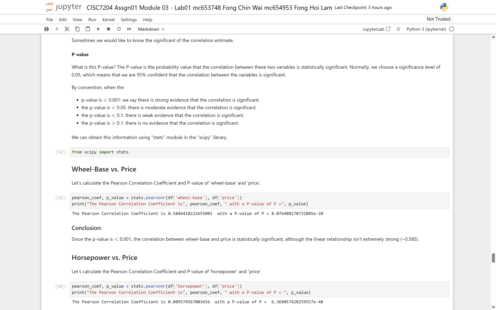
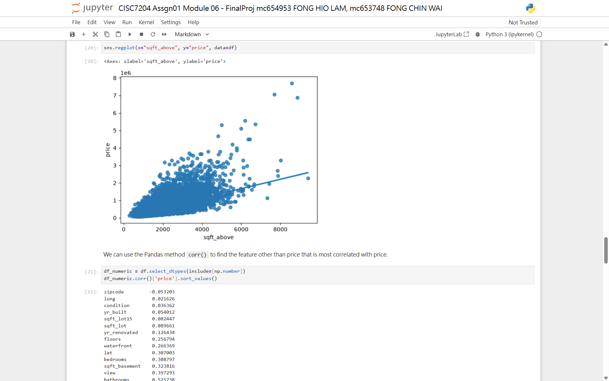
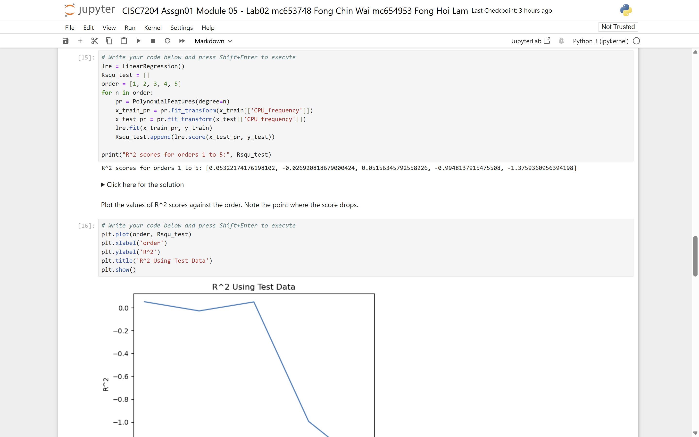

CISC7204 Assignment 1 — Price Regression Full-Pipeline Analysis
✓ CompletedResearch Questions
- Can car prices and laptop prices be predicted from technical specifications?
- Which features drive house prices in King County, WA?
- How do BMI, smoker status and age affect medical insurance costs?
Methods
- Data cleaning: missing-value imputation, normalisation, dummy variables
- EDA: correlation heatmaps, scatter & box plots, pivot tables
- Modelling: simple / multiple / polynomial linear regression, scikit-learn Pipeline
- Validation & tuning: k-fold cross-validation, Ridge regression, GridSearchCV
Key Findings
- Car price correlates strongly with engine size and curb weight
- High-degree polynomial fits overfit quickly; Ridge with a tuned alpha stabilises them
- Sqft living area dominates King County house price; smoker status drives insurance charges




🔗 Repository: github.com/FongHioLam-mc654953/data-science-project